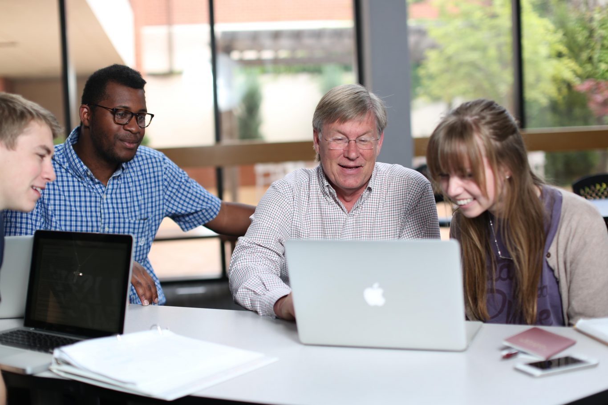
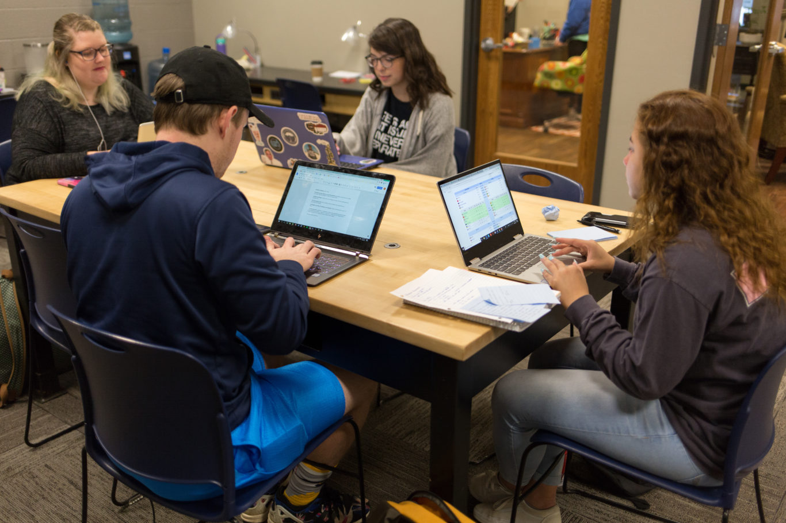
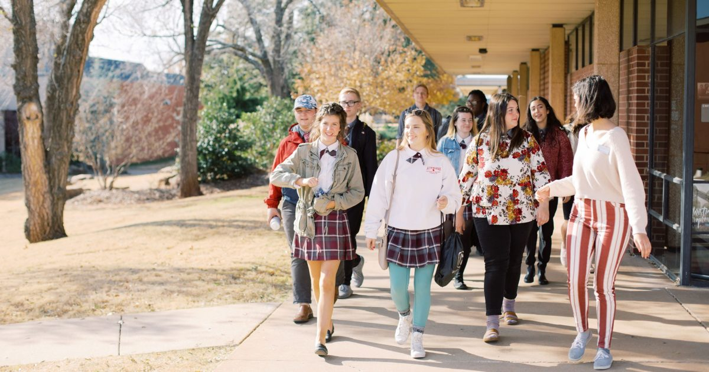

|  |  |  |
| A computer science student will be learning and culivating skills |
As a student you would be going to your classes. If there are classes with lab then you would also go to lab. As well you can talk with your professor and ask for help on any of your assignments. |
Students also can have thier own time. They may want some quiet time or they can join any activities their school may provide. Although it is good to have a social life, one should finish thier work before they can go and have free time. |
Here is a video of a student's life as a computer science major.